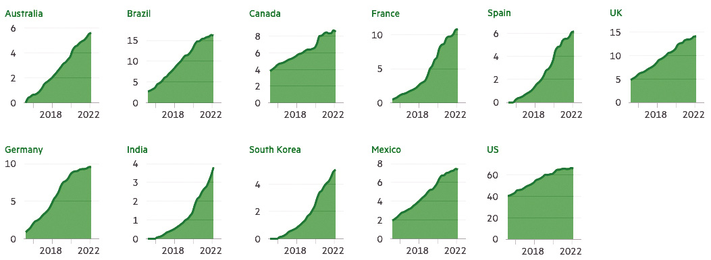
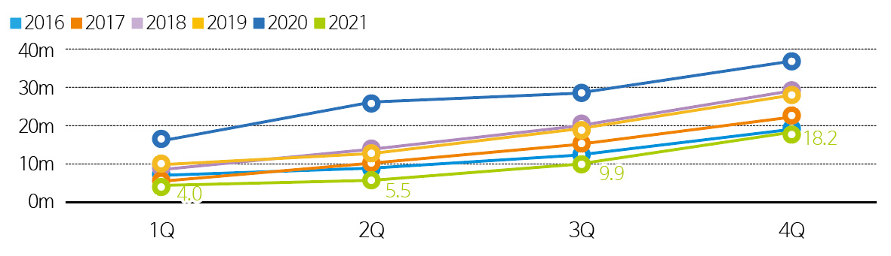
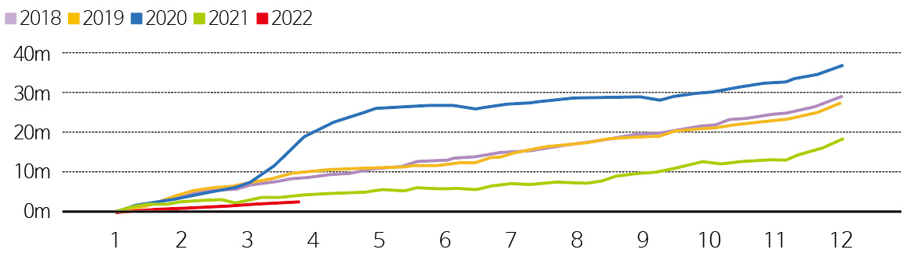
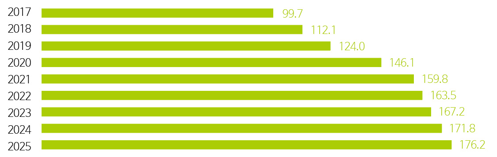
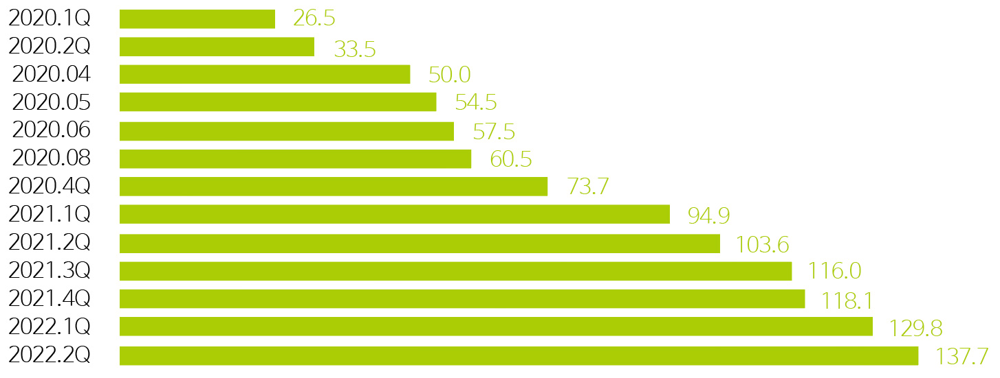
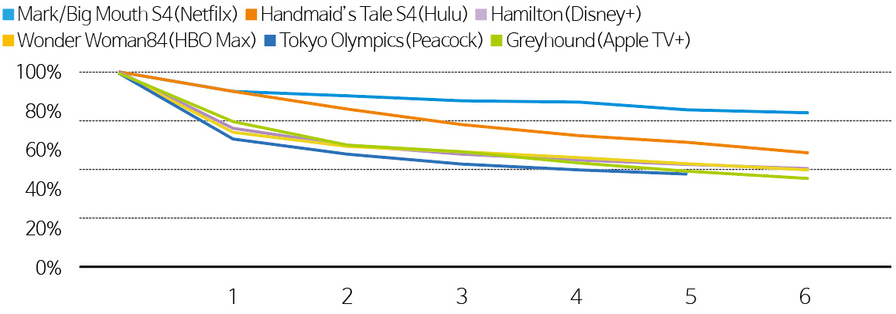
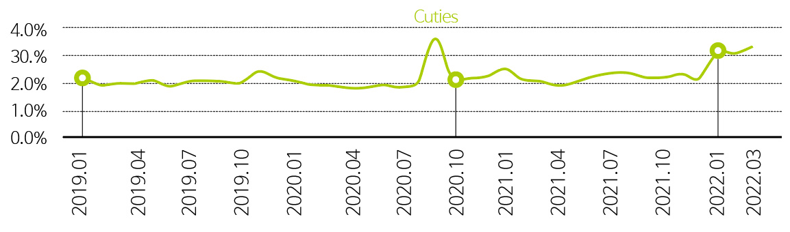

트렌드 리포트

Trend ReportOTT 시장 2.0:
새로운 성장 전략 분석
강정수
(미디어스피어 이사)
-
글로벌 OTT 시장은 스트리밍 기술 능력 여부와 가입자 확보가 중요한 초기 시장을 지나 스트리밍 기술을 (경제) 효율적으로 운영할 수 있는 능력이 중요해지고 있다. 이 새로운 국면은 OTT 시장 2.0이라고 정의된다. OTT 시장 2.0에서는 OTT 사업자의 경쟁 상대가 전통 TV 및 케이블 방송사뿐만 아니라 구글과 메타 같은 정보기술 업체로 확대된다. 이러한 변화 속에서 넷플릭스(Netflix)를 중심으로 새로운 대응 전략 마련이 더욱 중요해지고 있다.
-
1들어가며지금까지 높은 성장률을 자랑하는 넷플릭스(Netflix)를 비롯하여 복수의 글로벌 OTT 서비스가 정체기를 맞고 있다. 이를 반영하듯 넷플릭스 주가는 2022년 1월 1일부터 2022년 8월 1일까지 70퍼센트의 하락을 경험하고 있으며 디즈니(Disney), 파라마운트(Paramount), 워너 브라더스 디스커버리(Warner Bros. Discovery) 등은 동기간 25퍼센트 이상의 기업 가치 하락을 경험하고 있다. 글로벌 OTT 비즈니스의 정체는 코로나 팬데믹 효과가 사라진 것에서도 그 이유를 찾을 수 있고, 세계 각국에서 확인할 수 있는 높은 물가인상률과 실질 소득 하락에 따른 OTT 구독 취소에서도 그 이유를 찾을 수 있다1.
이러한 상황을 고려하여 OTT시장이 시장 포화(market saturation)2 국면에 접어들고 있다는 주장도 존재한다. 이 글은 구독자 수 중심으로 성장을 도모하던 글로벌 OTT 서비스 시장이 시장 포화 상태에 이르고 있으며 이를 OTT 시장 1.0이라 규정한다. 이 글은 글로벌 OTT 사업자가 구독자 1인당 평균 매출을 확대하는 방향으로 비즈니스 전략을 수정하면서 새로운 경쟁 구도를 형성하고 있는 상황을 OTT 시장 2.0이라 정의하고 있다. 글로벌 OTT 사업자의 비즈니스 전략 변화는 글로벌 OTT 시장뿐 아니라 전통 방송 시장 및 영화 시장의 질서 변화를 가져올 가능성이 높으며 이로 인해 시장 관찰자로서 공공 기관의 과제 또한 확장될 수 있다는 주장을 담고 있다.- Kolin, John & Hsu, Tiffany, New York Times, “And Now, a Word From Your Streaming Sponsor …”, https://www.nytimes.com/2022/04/19/business/media/netflix-amazon-disney-ads.html
- 2019년 Financial Times는 OTT 시장 성격을 시장 포화로 규정하고 있다. “The streaming market is heading for saturation”, https://www.ft.com/content/22011750-83a7-11e9-9935-ad75bb96c849 WSJ은 2022년 유사한 주장을 펼치고 있다: “Netflix Hits Its Ceiling”, https://www.wsj.com/articles/netflix-hits-its-ceiling-11650407847
-
2OTT 시장 포화OTT 시장 1위 사업자 넷플릭스는 2022년 2/4분기 실적 발표에서 총 구독자 수가 970,000명 축소되었다고 밝히고 있다. 2022년 1/4분기 200,000명의 구독자가 줄어든 이후 넷플릭스는 2분기 연속 구독자 역성장을 기록하고 있다. 이는 신규 가입자 규모보다 구독을 해지하는 이용자 수가 높기 때문이며, 해지율 가속화가 강화되고 있는 상황으로 판단할 수 있다. 아래에서는 다양한 지표로 구독자 수 성장률 저하를 확인하고자 한다.
첫째, 아래 그림에서 확인할 수 있는 것처럼 글로벌 1위 OTT 사업자 넷플릭스의 경우 북미 등 주요 시장에서 구독자 수 곡선은 평평한 국면을 뚜렷하게 보이고 있다.
미국, 캐나다, 독일, 영국, 브라질. 멕시코 등의 구독자 수는 성장률 둔화가 분명하게 나타난다. 아래 그림에서는 인도, 한국 등 아시아 시장의 구독자 수 성장 여력을 읽을 수 있다. 그러나 인도의 낮은 1인당 국민소득 등을 고려할 경우 구독이라는 반복되는 매출을 인도 시장에서 끌어올리는 일은 단기적으로 해결할 수 있는 과제로 분류하기 어렵다3. 넷플릭스의 구독자 증가가 한계 또는 천장에 도달한 것으로 판단할 수 있다.- 2020년 기준 인도 SVOD 시장 점유율 분포는 넷플릭스 20%, 아마존 프라임 비디오 20, 디즈니플러스 17% 등이다. 이러한 경쟁 상황을 고려하여 넷플릭스는 2021년 12월 인도 구독료를 18-60% 크게 인하했다. 그러나 이 인하된 가격도 대도시 제외 지역 거주자에게는 감당할 수 있는 가격-price afforability-으로 평가 받고 있지 못하다. 참조: Jha, Lata 2022, “Why Netflix struggles to crack the Indian market”, https://www.livemint.com/industry/media/netflix-india-story-still-buffering-11654187947338.html
그림 1주요 시장에서 넷플릭스의 구독자 수 곡선출처: Financial Times4
둘째, 2022년은 그 어느 해보다 신규 가입자 수 증가세가 둔화된 해이다. 아래 그림은 2021년까지 넷플릭스의 해당 년도 누적 신규 가입자 수를 보여주고 있다. 2020년까지 넷플릭스 신규 가입자 성장률은 매년 증가하고 있다. 특히 코로나 팬데믹 효과로 2020년의 신규 가입자는 매우 큰 폭으로 상승했음을 알 수 있다.그림 2코로나 팬데믹 이후 넷플릭스의 신규 가입자 증가율출처: Statista5
- Grimes, Christopher & Nicolaou, Anna 2022, Are you still watching? Netflix and the future of streaming, https://www.ft.com/content/fd376c16-f8d7-49fd-9b13-9ed2f001eaa1
- https://www.statista.com/chart/21465/global-paid-net-subscriber-additions-by-netflix/
그림 3넷플릭스의 연도별 가입자 증가율출처: SEC6/ TechCrunch7
그러나 팬데믹 효과가 축소되기 시작한 2021년은 2020년대비 신규 가입자 증가율이 크게 감소했음을 그림2에서 보여주고 있다. 그림 3은 2022년 신규 가입자 증가율이 2021년보다 더 낮음을 보이고 있다. 이는 넷플릭스 설립 이후 처음으로 나타나는 신규 구독자 수 성장률 둔화 현상이다.
요약하면 글로벌 OTT 시장 1위 사업자 넷플릭스를 기준으로 볼 때, 누적 구독자 수 및 신규 가입자 증가율 측면에서 넷플릭스는 높은 성장률을 기록하던 시대를 끝내고 있다고 평가할 수 있다. 일부 아시아 및 아프리카 시장을 제외한다면 넷플릭스가 빠르게 성장할 수 있는 시장 조건은 사라졌다고 평가할 수 있다.
1위 사업자의 성장률 저하 현상은 시장 전체의 포화를 규정할 수 있는 주요 변수 중 하나이지만, OTT 시장은 여전히 HBO 맥스(HBO Max), 파라마운트 +(Paramount Plus) 등 신규 사업자에 의해 시장의 확장 및 시장 경쟁 심화가 진행되고 있다. 하지만 2위 사업자 및 3위 사업자의 성장률을 살펴보면 시장 포화가 발생하기 시작했음을 부정하기 어렵다.
그림 4미국의 아마존 프라임 구독자 수 증감 추이출처: Statista8
2위 사업자인 아마존 프라임 비디오(Amazon Prime Video)의 경우 아마존 프라임(Amazon Prime)의 번들 상품이다. 그림 4에서 확인할 수 있는 것처럼 핵심 시장인 미국의 경우 아마존 프라임 구독자 수는 포화 국면에 진입하고 있다. 2021년 전후로 아마존 프라임 회원 수 증가율은 확연하게 구별되고 있다.
2021년 미국 아마존 프라임 가입자 수는 1억 5,980만으로 이는 2020년 미국 가구 수 1억2,235만9을 초과한 상태이다. 미국의 경우 아마존 프라임 가입자 수가 증가할 여지가 사실상 존재하지 않는다고 평가할 수 있다.
3위 사업자 디즈니 플러스의 경우도 구독자 수가 성장률 둔화를 경험하고 있다. 디즈니 플러스의 경우 아래 그림에서 확인할 수 있는 것처럼 1억1,600만 명의 구독자를 확보한 2021년 3/4분기 이후 구독자 성장률이 눈에 띄게 둔화하고 있다.
그림 5디즈니 플러스의 구독자 수 증감추이 (2020년 1분기~2022년 2분기)출처: Statista10
이렇게 시장 1위 사업자와 2위 및 3위 사업자의 구독자 성장률을 검토해 볼 때 글로벌 OTT 시장은 신규 가입자 확보보다 ① 해지율 억제 또는 고객유지율(customer retention rate) 증대, ② 고객 1인당 매출(ARPU) 증대 등이 중요해지는 시장 포화 국면으로 진입하고 있다.
-
3 OTT 시장 2.0: 비즈니스 전략의 변화시장 국면을 정의하는 일은 개별 기업뿐 아니라 시장 조정자로서 공공 기관에게도 중요하다. 시장 참여 기업에게는 시장 국면에 따른 비즈니스 전략 수정이 필요하기 때문이며, 시장 조정자로서 공공 기관에게는 개별 기업의 사업 전략 변화에 따른 시장 관찰 지점이 확장되기 때문이다.글로벌 OTT 시장을 주도하는 넷플릭스, 아마존 프라임 비디오, 디즈니 플러스 등 3개 기업의 비즈니스 전략 변화는 글로벌 OTT 시장뿐 아니라 전통 방송 시장 및 영화 시장의 질서 변화를 가져올 가능성이 높기 때문이다.
시장 국면 변화에 따른 OTT 사업자의 비즈니스 전략으로는 ① ARPU 증대를 위한 프랜차이즈 전략과 머천다이징 전략, ② 해지율 억제를 위한 오리지널 콘텐츠 생산과 광고 기반 VOD 도입, ③ 중국 시장 진출과 새로운 매출 창출을 위한 창구 전략(windowing strategy) 도입 가능성이 관찰되고 있다.3.1.ARPU 증대를 위한 프랜차이즈 전략과 머천다이징 전략
ARPU 증대를 위해 1위 사업자 넷플릭스는 디즈니로부터 비즈니스 전략을 차용하기 시작했다. 22년 7월 19일 로이터 보도11에 따르면 넷플릭스는 프랜차이즈 전략을 본격화하고 있다. 넷플릭스 부대표 매튜 써넬(Matthew Thunell)은 “넷플릭스는 <스타워즈(Star Wars)>의 넷플릭스 버전을 갖고자 하고, <해리 포터(Harry Potter)>의 넷플릭스 사례를 찾고자 한다. 이를 이루기 위해 매우 큰 역량을 집중하고 있다”라며 프랜차이즈 전략을 준비하고 있음을 밝히고 있다. 이 전략에는 영화나 드라마의 속편, 드라마를 영화화하거나 새로운 맥락의 드라마를 제작하는 파생 작품(spin-offs), 리메이크 제작이 속한다. 최근 공개된 <종이의 집> 한국 리메이크 등도 넷플릭스의 프랜차이즈 전략 중 하나로 분류 가능하다.
프랜차이즈 전략과 함께 넷플릭스는 머천다이징 전략도 동시에 취하고 있다. 현재 준비되고 있는 <기묘한 이야기(Stranger Things)>의 스핀오프12는 프랜차이즈로 분류 가능하다. <기묘한 이야기> 시즌 4에 새로운 출연진으로 합류한 아가일(Argyle)은 극중에서 서퍼보이 피자 레스토랑(Surfer Boy Pizza)에서 일을 하며 조나단(Jonathan)과 동생들을 피자배달차로 태워주는 역할을 맡고 있다. <기묘한 이야기> 시즌 4의 인기를 바탕으로 넷플릭스는 월마트를 통해 서퍼보이 냉동 피자13 판매를 시작했다. 또한 넷플릭스는 시즌 4에 등장한 매직 8볼을 상품화하여 (직접) 판매14하고 있다. 한편 넷플릭스는 <오징어게임> 시즌 2 시작 이전 이머시브 게임박스(Immersive Gamebox)와 함께 <오징어게임> 게임 서비스15를 제공하고 있다. 넷플릭스가 머천다이징에 적극적으로 나서고 있음을 보여주는 사례들이라고 평가할 수 있다.
로이터(Reuters)의 보도에 따르면, <기묘한 이야기>의 프랜차이즈와 머천다이징과 유사한 전략을 넷플릭스 오리지널에서 10여개 준비를 하고 있다. 여기에 <오징어게임> 시즌 2도 속한다. <오징어게임>과 <브리저튼(Bridgerton)>은 전편(prequel)이 준비되고 있는 상황이며, <더 위쳐(The Witcher)>의 경우 애니메이션 버전 제작이 시작되었다.
이러한 지적재산(IP)의 가치 확대 전략으로서 프랜차이즈 전략은 디즈니의 성장 모델에서 확인할 수 있는 것처럼 넷플릭스에게 작지 않은 매출 증대 및 이윤율 증가를 선사할 가능성이 높다. 또한 팬덤이 존재하는 오리지널 프로그램에 지금까지 적극적으로 활용하지 않았던 머천다이징 기회를 넷플릭스가 주목하고 있다는 점도 이후 매출 확장의 가능성을 보여주는 대목이다.- Chmielewski, Dawn & Richwine, Lisa, Reuters, “Netflix greenlights a ‘Stranger Things’ spin-off series to help build a franchise”, https://www.reuters.com/business/media-telecom/netflix-greenlights-stranger-things-spin-off-series-help-build-franchise-2022-07-06/
- https://www.walmart.com/browse/surfer-boy-pizza/YnJhbmQ6U3VyZmVyIEJveSBQaXp6YQieie
- https://www.netflix.shop/products/magic-8-ball-stranger-things
- https://immersivegamebox.com/squid-game/
3.2.해지율 억제를 위한 오리지널 콘텐츠 생산과 광고 기반 VOD 도입
월스트리트 저널(Wall Street Jounal, WSJ)의 보도16에 따르면 OTT 서비스의 대중화와 함께 OTT 서비스를 크리스마스 시즌, 겨울 방학 등 특정 기간에 집중 소비하는 소비 유형 또한 적지 않은 규모를 형성하고 있다. 구독과 해지를 반복하는 소비 유형이 존재하고 있음을 의미한다. 때문에 이러한 구독자 수 변동을 관리하는 일이 비즈니스 전략의 주요 과제로 등장하고 있다. 성장 국면에서는 신규 고객 확보가 가장 중요한 성과지표라면 시장 포화 국면에서는 해지율 억제 또는 고객유지율 증대가 더 중요한 성과지표로 작동한다.
신규 고객 확보뿐 아니라 해지율 억제는 다양한 요소의 복합적 작용으로 결정된다. 그러나 넷플릭스 등 OTT 서비스에서 해지율과 신규 고객 확보에 가장 큰 역할을 하고 있는 것은 오리지널 콘텐츠로 평가 받고 있다. 앞선 WSJ 보도는 오리지널 콘텐츠와 해지율 사이의 부(-)의 상관관계를 설명하고 있다. HBO MAX의 <원더우먼 84(Wonder Woman 1984)>, 넷플릭스의 <빅 마우스(Big Mouth)> 시즌 4, 디즈니 플러스의 <해밀턴(Hamilton)>은 영화 및 드라마 공개와 때를 맞추어 적지 않은 규모의 신규 가입이 발생했다. 문제는 이 신규 가입한 회원 중 일부 회원이 시간이 지나면서 구독을 해지하는 비율이다. 그림6이 이를 보여주고 있다.- Mullin, Benjamin & Marcelis, David, WSJ, 2022, “Disney+, HBO Max and Other Streamers Get Waves of Subscribers From Must-See Content. Keeping Them Is Hard”, https://www.wsj.com/articles/streaming-data-netflix-hbo-disney-hulu-11643560207
그림 6특정 콘텐츠 방영 계기로 가입한 구독자들의 추후 해지 비율출처: WSJ17
HBO 맥스의 경우 <원더우먼 84>를 계기로 신규 가입한 회원 중 약 50퍼센트가 6개월 이후 서비스를 해지하고 있다. 상대적으로 넷플릭스(의 <빅 마우스>)의 이탈율이 낮다. 6개월 이후 넷플릭스 이탈율은 21퍼센트에 그치고 있다. 이는 그만큼 넷플릭스의 (오리지널) 콘텐츠 카탈로그 규모가 크기 때문이라고 볼 수 있다. WSJ 분석의 함의는 해지율을 낮게 유지하기 위해서는 카탈로그에 대한 막대한 투자가 필요하다는 점이다. 해지율 억제 측면에서 넷플릭스와 아마존 프라임 비디오는 디즈니 플러스 등 후발 주자 대비 시장 경쟁력을 가지고 있다고 평가할 수 있다.
오리지널 콘텐츠와 해지율 사이의 부(-) 상관관계는 이후 비즈니스 전략에 또 다른 변화 가능성을 시사하고 있다. 지금까지 빈지(Binge Watching)라는 소비자 경험을 위해 에피소드 모두를 공개했다면, 이제 빈지를 통한 소비자 경험의 차별화보다 해지율 억제가 더 중요한 성과지표(KPI)로 작동한다면 에피소드 공개 방식의 변화가 가능하다. 한 주에 한 편씩 에피소드를 공개할 때 해지율의 시기를 연장할 수 있기 때문이다. 다시 말해 넷플릭스 등 OTT 사업자가 전편 공개 방식을 벗어난 새로운 에피소드 공개 방식을 선택할 가능성이 존재한다.- 상동
그림 7미국에서 넷플릭스의 월간 구독 해지율출처: Antenna118
다른 한편 그림 7에서 확인할 수 있는 것처럼 해지율과 구독료 인상은 정(+)의 상관관계를 보이고 있다. 여기서 일반적 가격 탄력성을 추론할 수 있다.
넷플릭스는 한편으론 2022년 상반기 북미 및 유럽의 신규 가입자를 대상으로 월 구독료를 인상했으며 다른 한편으론 오리지널 콘텐츠 생산에 높은 수준의 투자 규모를 유지하고 있다. 해지율과 부(-)와 정(+)의 상관관계를 보이고 있는 구독료 인상과 오리지널 콘텐츠가 동시에 작동하고 있다. 이 중 어떤 요소가 해지율 유지에 어떤 강도의 기여를 할 수 있을지 예측하기 이르지만 해지율 유지는 일정 수준 제어될 가능성이 높다.
넷플릭스가 해지율을 억제하기 위해 선택한 다른 옵션은 광고기반 서비스다. 마이크로소프트와 협업하여 제공되는 광고기반 OTT 서비스는 이른바 FAST(Free Ad-supported StreamingTV)와는 구별된다. FAST의 대표 서비스로는 아마존 프리비(Amazon freevee)19가 존재한다. ‘아마존 프리비’는 지금까지 북미 지역에 IMDB란 이름으로 제공되었고, 2022년 하반기 ‘프리비’라는 이름으로 북미 뿐 아니라 영국과 독일에도 서비스를 시작한다.
FAST는 광고를 시청하는 조건으로 OTT 서비스가 무료로 제공된다면 넷플릭스의 AVOD는 광고를 시청할 경우 일정 수준의 구독료가 할인되는 방식이다. 이는 넷플릭스가 광고 매출로 추가 매출을 목표로 한다고 평가할 수도 있지만 넷플릭스가 지불 의사가 낮은 고객을 대상으로 해지율을 제어하는 수단으로 AVOD를 활용하고자 한다는 해석도 가능하다.3.3.중국 시장 진출과 새로운 매출 창출을 위한 창구 전략(windowing strategy)
구독자 수에 집중된 성장 전략에서 벗어나는 비즈니스 전략은 구독자 수의 큰 변화가 불가능할 때 전체 매출을 어떻게 끌어올릴 수 있는가라는 질문에 답변하는 일에서 시작한다. 이러한 맥락에서 최근 가능성이 검토되고 있는 전략은 넷플릭스 등 OTT 사업자의 오리지널 콘텐츠를 극장에 개봉하는 방법이다20. 이는 넷플릭스가 전통 미디어 사업자가 운영하는 창구 전략(windowing strategy)을 도입하는 것으로 해석할 수 있다. 창구전략은 코로나 팬데믹에서는 실현할 수 없는 비즈니스 전략이지만 팬데믹이 약화되거나 끝날 경우 충분히 운영 가능한 전략이다. 또한 넷플릭스 등 글로벌 OTT 사업자가 진출하지 못한 중국시장에서 창구 전략은 효과를 발휘할 수 있다. 디즈니가 중국 시장에 접근하는 방식을 넷플릭스가 거부할 이유는 없기 때문이다.- Meek, George, tvtech, “The Importance of a Windowing Strategy for OTT”, https://www.tvtechnology.com/opinion/the-importance-of-a-windowing-strategy-for-ott
-
4OTT 비즈니스 전략 변화의 의미: 오리지널 경쟁력넷플릭스는 DVD (우편) 대여로 사업을 시작한 기업이다. 이 때 경쟁사는 TV 방송사업자 및 케이블 방송사업자였다. 넷플릭스가 스트리밍 서비스를 시작할 초기에도 이 경쟁 구도에 변화는 없었다. 이 경쟁 구도에서 소비자에게 소구할 수 있는 넷플릭스 서비스 차별화 지점은 (중간) 광고없이 시리즈를 몰아보는 빈지 워칭(binge watching)이였다. 이렇게 넷플릭스가 제공하는 소비자 경험이 다르다라는 주장이 타당한 이유는 전통 TV 방송사업자 및 케이블 방송사업자라는 비교 대상이 존재했기 때문이다. 소비자 경험 차별화에 기초하여 넷플릭스는 시장 경쟁력을 확보하며 빠르게 구독자 수를 증가시킬 수 있었다. 그러나 시장 국면이 성장 시장에서 포화 시장으로 변화하면 소비자 경험 차별화로는 더 이상 시장 경쟁력을 유지할 수 없다. 아마존 프라임 비디오, 디즈니 플러스 등 동일한 소비자 경험을 제공하는 강력한 시장 경쟁 구도가 형성되기 시작했고, 구독자 수 또한 더 이상 빠르게 성장할 수 없는 높은 수준을 기록하고 있기 때문이다.
넷플릭스는 이러한 시장 국면 변화에 따른 비즈니스 전략 전환을 2019년부터 시도하고 있다. 넷플릭스 공동 대표 리드 헤이스팅스(Reed Hastings)는 2019년 4/4분기 주주 편지에서 넷플릭스의 변화된 경쟁 구도를 다음과 같이 이야기한다. “넷플릭스는 HBO와 경쟁하기 보다는 포트나이트(Fortnite)와 경쟁하고 있다(We compete with (and lose to) Fortnite more than HBO)21.” 이는 HBO로 상징하는 TV 또는 케이블 방송사업자가 넷플릭스의 경쟁사가 아니라 소비자의 소중한 시간을 둘러싼 싸움에서 넷플릭스의 경쟁사는 게임회사라는 주장이다. 실제로 2021년 11월 넷플릭스는 게임 서비스를 시작했다.- Fung, Brian, Washington Post, “Netflix: Fortnite is a bigger rival than HBO”, https://www.washingtonpost.com/technology/2019/01/18/netflix-fortnite-is-bigger-rival-than-hbo/
헤스팅스의 위 주장에서 게임은 게임 그 자체가 아니라 소비자 시간을 점유하는 경쟁 서비스를 총칭한다. 게임은 소비자 시간 점유 경쟁에서 주요 경쟁 대상에 속하지만 광고 또한 경쟁 대상이다. 광고는 소비자의 희소한 시간 또는 주의 집중을 판매하는 상품이기 때문이다. 이렇게 광고 기반 OTT 시장은 해지율 억제뿐 아니라 소비자의 시간 확보 경쟁이라는 전략적 의미를 가지고 있다.
시장 포화를 경험하며 비즈니스 전략 전환을 시도하고 있는 넷플릭스에게는 경쟁사 대비 또 다른 시장 경쟁력이 존재한다. 바로 오리지널 콘텐츠 생산의 효율성이다. 빈지라는 색다르고 뛰어나 소비자 경험을 전달했던 서비스 초기에 넷플릭스 오리지널은 존재하지 않았다. 넷플릭스는 두 번째 비즈니스 전략으로 오리지널 콘텐츠를 선택하고 이를 통해 전세계에서 신규 구독자 확보에 집중했다. 결과적으로 넷플릭스 등 OTT 서비스 사업자에게는 TV 및 케이블 방송 사업자가 갖고 있지 못한 풍부한 오리지널 콘텐츠 카탈로그가 존재한다. 한편 넷플릭스는 2억 2,000만명이(22년 6월 30일 기준) 넘는 구독자를 (여전히) 가지고 있다. 이러한 규모는 오리지널 콘텐츠의 가입자 1인당 (제작) 비용이 낮음을 의미한다. 이러한 생산 효율성은 TV 및 케이블 방송 사업자 대비뿐 아니라 타 스트리밍 사업자대비 넷플릭스의 강력한 경쟁 우위를 뜻하며, 넷플릭스가 앞으로 계속해서 거대한 규모로 오리지널 제작 투자를 이어나갈 수 있음을 뜻한다. 앞서 설명한 것처럼 넷플릭스 등 글로벌 OTT 사업자의 오리지널 경쟁력은 변화된 시장 국면에서 해지율 억제 및 신규 고객 확보에 있어 해자(moat)로 작동 가능하다.
넷플릭스 초기에 넷플릭스의 경쟁 차별화 지점은 ‘광고없이 몰아보기’라는 고객 경험이었다. 이제 넷플릭스의 경쟁 차별화 지점은 풍부한 오리지널과 낮은 1인당 오리지널 제작 비용이다. 여기에 넷플릭스는 프랜차이즈 전략, 머천다이징 전략, 창구 전략 등을 추가하고 있다. -
5 광고 기반 OTT 의미: 전통 TV 광고 시장의 축소광고 기반 OTT(AVOD)가 어느 정도 시장성을 확보할 수 있을지 예측하기는 쉽지 않다. 또한 AVOD와 SVOD 사이의 자기잠식효과(market cannibalization)가 존재할지 자기잠식효과가 나타난다면 어떤 방향으로 어느 규모로 형성될지 분석하는 일도 현재로선 어렵다. 짚고 넘어가야 하는 부분은 OTT 광고는 전통 TV광고가 아니라 디지털 광고라는 점이다. 넷플릭스, 아마존, 디즈니 등이 OTT 광고 비즈니스를 시작한다는 뜻은 그 경쟁 기업이 구글(Google), 메타(Meta), 틱톡(TikTok) 등임을 의미한다. 이들 경쟁 기업에 준하는 더 좋은 광고 효율로 광고주를 설득할 자신이 있을 때 넷플릭스는 비로소 광고 비즈니스에서 의미 있는 성과를 거둘 수 있다. 넷플릭스와 디즈니가 디지털 광고 비즈니스를 위해 각각 마이크로소프트 및 트레이드 데스크(The Trade Desk)와 협업을 한다는 사실에서 넷플릭스와 디즈니가 아직 디지털 광고 비즈니스를 직접 진행할 시장 경쟁력을 확보하지 못하고 있다는 추론이 가능하다.
디지털 광고 비즈니스를 진행하기 위해서는 ① 풍부한 (고객 행위) 데이터를 가지고 있어야 한다. ② 고도의 (타겟팅) 광고 기술능력(ad tech stack)이 필요하다. ③ 앞선 두 가지를 운영할 수 있는 고급 전문 인력이 필요하다. 넷플릭스와 디즈니는 이 세가지 영역에서 부분적인 경쟁력을 갖추고 있을 수는 있으나 그 수준이 구글, 메타 그리고 아마존 등과 경쟁하기 어려운 수준으로 평가할 수 있다. 이 세 가지 조건을 얼마나 빨리 넷플릭스 및 디즈니가 갖출 수 있을 것인가에 따라 AVOD 서비스에 따른 영상 디지털 광고 시장의 변화가 본격화될 수 있다.
넷플릭스, 아마존 프라임 비디오, 디즈니 등이 영상 광고 시장의 무게 중심을 전통 TV와 케이블 방송 광고에서 디지털 광고로 이동시킬 수 있을지, 이동한다면 그 시장 크기가 어떻게 될지 현재 시점에서 예측하는 것은 불가능에 가깝다. 다만 전통 TV 방송사와 케이블 방송사는 AVOD가 자체 광고 시장에 미칠 영향을 분석하고 대응책 마련을 시급히 서두를 필요가 있다. 광고주 입장에서 효율성 높은 AVOD 시장으로 이동하지 않을 이유가 없기 때문이다.
6 OTT 시장 2.0과 시장 경쟁 변화1960년대 컬러TV가 (미국을 시작으로) 시장에 도입되기 시작할 때 방송 사업자에게 중요한 것은 컬러TV 기술 자체였다. 컬러TV에 맞는 방송을 할 수 있는가 아닌가라는 기술 능력 여부가 중요했다. 그러나 디즈니를 시작으로 컬러TV에 맞는 영상 콘텐츠가 본격적으로 생산된 1970년대에는기술 그 자체보다는 방송을 누가 (경제) 효율적으로 운영할 수 있는가가 중요해졌다.
컬러TV와 유사하게 OTT 시장은 새로운 국면을 맞고 있다. 글로벌 OTT 시장은 스트리밍 기술 능력 여부와 가입자 확보가 중요한 초기 시장을 지나 스트리밍 기술을 (경제) 효율적으로 운영할 수 있는 능력이 중요해지고 있다. 이 새로운 국면을 OTT 시장 2.0이라고 정의할 수 있다. OTT 시장 2.0은 초기 시장, 다시 말해 OTT 시장 1.0과 명확하게 구별되는 시장 성격과 사업자의 비즈니스 전략으로 구성되어 있다. 아직까지 OTT 시장 2.0이 어떠한 동학을 보일지 알 수 없지만 경쟁시장으로 OTT 시장을 정의할 때 OTT 시장은 전통 TV 시장 및 케이블 방송 시장과도 경쟁하고 이제 나아가 구글, 메타, 유튜브(YouTube) 등과도 경쟁하는 시장으로 진화하고 있다. 시장 조정자로서 공공 기관의 관찰 시장이 확대되고 있다고 말할 수 있는 지점이다